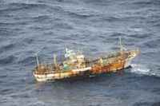

Efe @ 24-03-2012 18:28
Washington.- El barco lleva un año a la deriva sin nadie al mando. Las autoridades lo vigilan para evitar una posible contaminación marina.
Un barco de pesca japonés arrastrado por el 'tsunami' de marzo de 2011 ha sido avistado flotando a la deriva cerca de la costa oeste de Canadá, según informó este sábado Marc Proulx, coordinador marítimo del Centro de Rescate Conjunto de Victoria, en la Columbia Británica.
El pesquero fue visto por primera vez por una patrulla aérea militar canadiense y se ha determinado que ha estado a la deriva sin nadie al mando desde el devastador terremoto y posterior 'tsunami' ocurridos en Japón el 11 de marzo del año pasado.
Según investigadores de la Universidad de Hawaii, el 'tsunami' generó más de 25 millones de toneladas de escombros, de las que al menos cuatro millones fueron a parar al mar.
Las autoridades canadienses están vigilando el barco para evitar una posible contaminación marina, aunque no hay indicios de fugas de combustible.